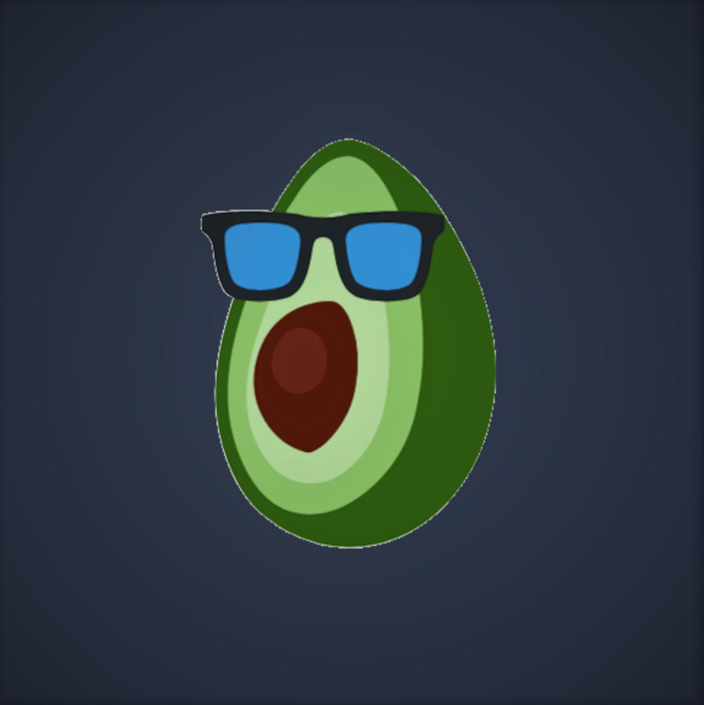
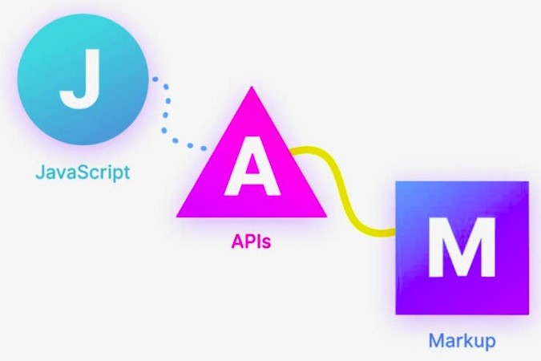
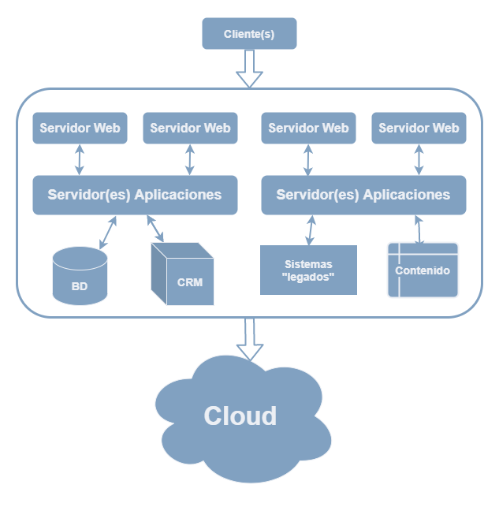
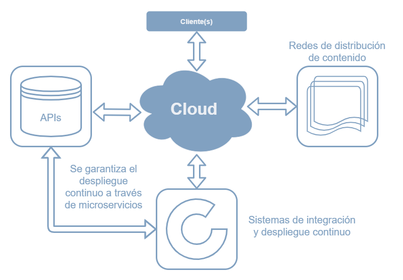
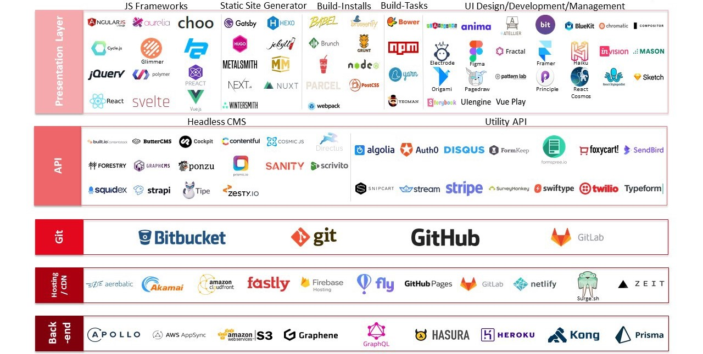

Contenido del taller
¿Qué NO es JAMStack?
- Un stack fijo de tecnologías (como MEAN, LAMP, etc).
- Una tecnología "nueva".
- Un movimiento pagado por alguna compañía.
- "Serverless".
- Arquitectura distribuida.
¿Qué SI es JAMStack?
- Administración del contenido.
- Redes de distribución de contenido (CDN).
- Manejadores de contenido (CMS).
- Alta disponibilidad.
- Escalable.
- Desacoplado.
- Agnóstico de la tecnología a usar.
- Javascript.

En el "pasado" :(

Ahora, usando JAMStack XD

¿Tecnologías a usar? Hay para elegir...

Casos de uso
- Sistemas de documentación.
- Servicio de publicación de libros (Gitbook).
- Administradores empresariales de recursos (Citrix, Bitrix24).
- Blogs (WordPress, Jekyll).
- E-commerce (Amazon, Shopify, Snipcart, Mercado Libre).
- Generadores de sitios web (Gatsby, Next.js, Gridsome, Vuepress)
- Administradores de contenido (Strapi, Contentful)
- Redes especializadas de contenido (Vercel, Netlify)
- Muchos más ejemplos: https://jamstack.org/examples/